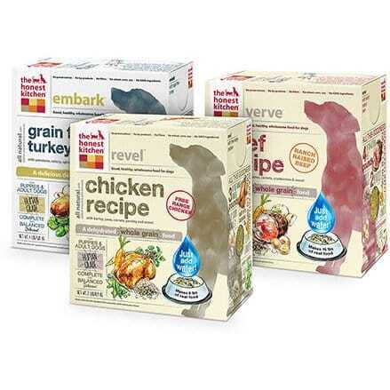
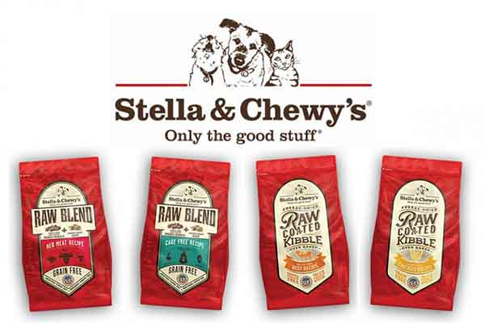
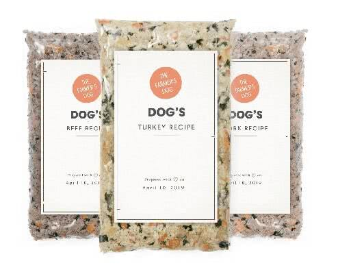
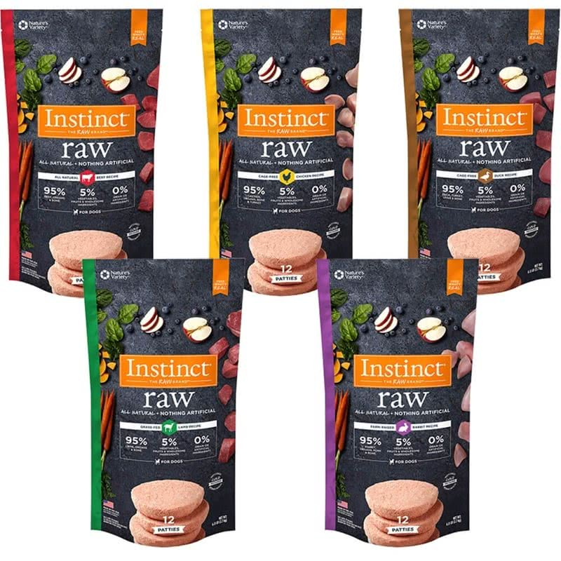
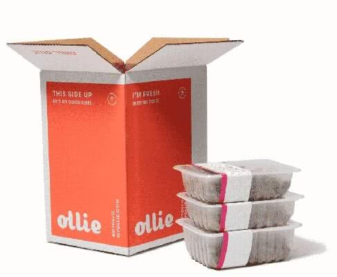
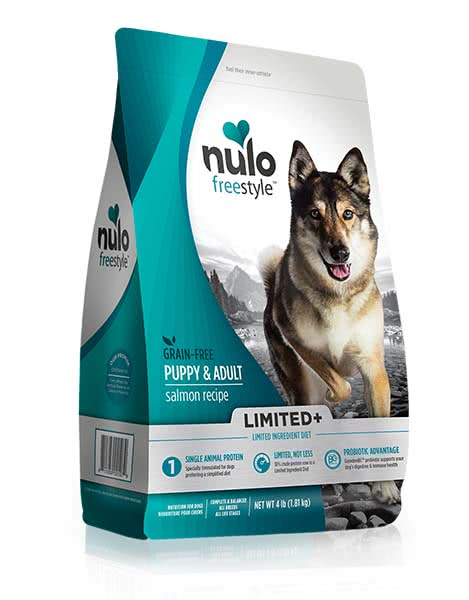
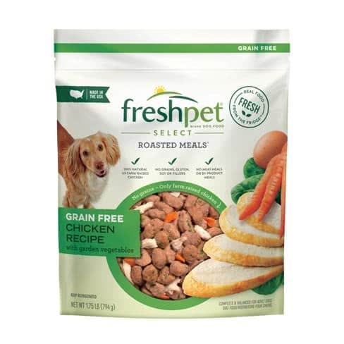
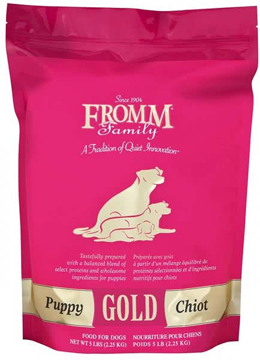
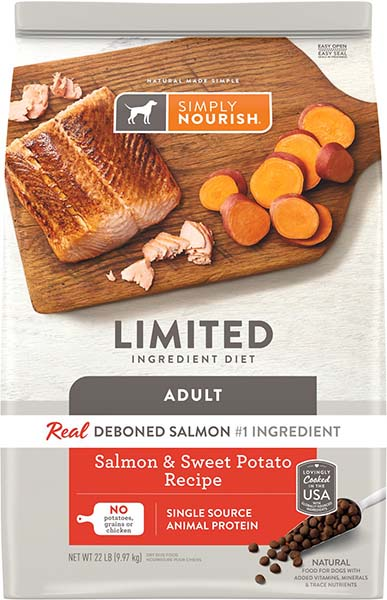

How to pick the Best Food for a French Bulldog?
Follow our 2019 guideline below!
Yes, kibble is very convenient and that’s what a big portion of dogs owners worldwide feeds, but is it really the best option for your dog? As a responsible dog owner you are probably what is the best food for a French Bulldog in 2019?
Let’s just start by saying, dogs just like humans, require fresh food to thrive. Your French Bulldog will experience less issues if fed a high quality diet.
Below you can find some examples of high quality kibble, if anything else is out of the budget, but also some other variations that I would personally prioritize.
If you decide to feed a high quality kibble make sure you still add some fresh ingredients like carrots, blueberries, spinach, etc. to your dogs diet.
Honest Kitchen

An all time favorite in our household that actually decreased shedding and flatulence. The Honest Kitchen Beef Recipe.
It’s a dehydrated raw human grade food in a form of a powder that you rehydrate with warm water. You can always add some fresh blueberries, chia seeds and other vegetables to your dogs meal.
When I decided to write a blog about the Best Food for a French Bulldog - Honest Kitchen was the first to pop up to mind.
Open Farm Freeze Dried Raw

Many French Bulldog owners swear by the raw dog diet. If you are too grossed out to actually prepare the meals yourself, you can always decide to go with many Open Farm Freeze Dried Raw Food variations.
Stella and Chewy’s Raw Kibble Blend

Stella and Chewy’s is a very popular brand in the dog world. They are notorious for their dehydrated raw dinner patties, but I agree it can get costly.
Here is a more affordable alternative - raw coated high quality kibble. Or kibble with dehydrated raw pieces.
Farmer’s Dog Fresh Food Delivery Service

Not much to say here. Farmer’s Dog Food is a freshly made, dog food delivery service, AWESOME! This is the best dog food for french bulldogs with gas.
You can set up the details, for example frequency, breed and ingredients to avoid on their website. Like I said before fresh food plays a big role in French Bulldog health, so if your budget is flexible I would definitely give this dog food a try.
Instinct

Instinct is a brand that offers the Best food for a French Bulldog. You can pick between their frozen raw options or raw booster kibble.
I use their frozen raw food daily and I think it’s the best dog food for french bulldog with skin allergies. The ingredients are very limited and you can easily eliminate the allergen.
My Ollie

My Ollie is another dog food subscription that allows you to customize your French Bulldog food plan.
We love their Beefy Hearts Recipe that contains all the Vital French Bulldog Nutrients : Beef, beef heart, beef kidney, sweet potato, beef liver, peas, potato, carrot, spinach, chia seed, dicalcium phosphate, sunflower oil, blueberries, calcium carbonate, fish oil (preserved with tocopherols), iodized salt, zinc gluconate, basil, rosemary, vitamin E supplement, pyridoxine hydrochloride (Vitamin B6), riboflavin (Vitamin B2).
Nulo

Nulo is a small dog food brand that caught everyone’s attention with their high meat formulated kibbles.
If you look at the ingredients of commercial kibbles, most of them contain fillers, but not that much meat. Meat is crucial for your dogs health and should always be the number 1st, 2nd and 3rd ingredient.
Fresh Pet Dog Food

Fresh Pet is the best food for french bulldogs with sensitive stomach
Frenchies generally do great on home cooked food and this freshly made pet food will definitely work for your little companion. It’s also a great choice if you have a puppy that’s having difficulties producing a solid bowel movement.
It is a bit on a pricey side, especially if you have multiple dogs, but it’s up to you to decide. There definitely are more affordable food brands that are just as good.
Or, you can always commit to cooking for your French Bulldog. Check out these 5 French Bulldog Food recipes.
Fromm

Fromm has been and always will be a popular dog food brand. Since the FDA issued the potential link between certain dog food brands and Canine Heart disease, many people decided to do the switch.
But we have to keep in mind that the direct link was never proven, and the grain free dog food, was the only cause for concern. Fromm offers many whole grain dog food options that I would recommend to this day.
Simply Nourish

Last but not least, Simply Nourish. Simply Nourish is definitely a dog food brand that is accessible to all budgets, and you can conveniently get it at any Pet Smart in your area. Find a formula that works best for you canine friend.
Made specially to support the unique needs and dietary preferences of growing puppies, it includes a super-food blend of real fruits and vegetables like peas, potatoes, carrots, spinach, sweet potato, pumpkin and blueberries for a deliciously complete and balanced meal that’s also filled with antioxidants.
To Summarize
I hope you will be able to pick the best food for French Bulldog puppies and adults, after reading our blog.
My last recommendation would be - don’t rely on one specific dog food brand and don’t be scared to mix it up. Mix your kibble with freshly prepared foods, or add some raw to your pup’s daily meal. There is nothing wrong with diversity.